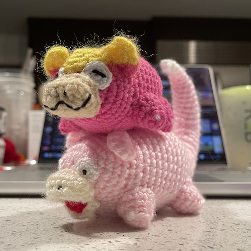

pokemon crochet

chansey

larvitar

smoliv

deerling and meloetta
galarian and shiny slowpokes. yadon~

gulpin? gulpin deez nu-

normal and shiny lotads

based off the wailmer bottle in pokemon go

rowlet, goomy, wooper, + bonus kirby lol
Interested in obtaining one, or have an idea? Hmu, perhaps we can work something out.
Yarn, crochet hook